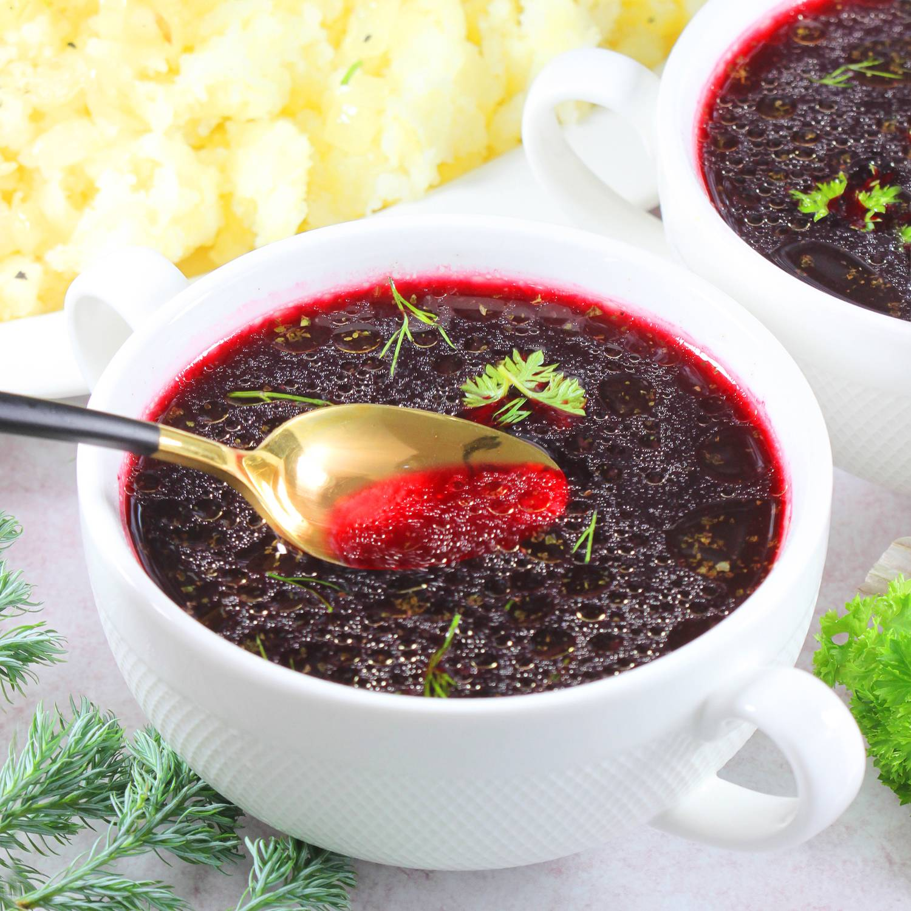

Barszcz

Description
Barszcz is one of the most delicious Polish soups.
My recipe for red borscht is very old and tried-and-true.
I usually cook red borscht with potatoes for my family.
Welcome!
Ingredients
- 2 liters of vegetable or chicken broth
- 1 kg of red beets
- 2 cloves of garlic
- 2 dried mushrooms
- Spices: 1 teaspoon of marjoram and sugar each, 1 tablespoon of vinegar, salt and pepper to taste
Steps
- Place half a chicken in a pot with vegetables and herbs. Rinse all vegetables under cold running water. Peel two medium carrots, parsley root, and a piece of celery, then add them to the pot. Include parsley leaves, chopped celery stalks, and unpeeled garlic cloves. Halve an onion and lightly brown it in a dry pan or over a gas burner.
- Add 2 bay leaves, 4 allspice berries, a teaspoon of peppercorns, and a tablespoon of salt to the pot. Pour in three liters of water, cover the pot, and place it on the stove. Set to high heat to bring the broth to a quick boil. Remove any foam (coagulated protein) if necessary, then reduce the heat to minimum and simmer the soup for two hours.
- Afterward, strain the broth. The remaining broth and vegetables can be used for another dish, like soup, pâté, or fillings for pancakes, pierogi, or croquettes.
- Add one kilogram of peeled and sliced beets to two liters of strained broth. Halve each beet and then slice halves into thicker pieces. Also, add two garlic cloves and two larger pieces of dried mushrooms. You can include a small bay leaf as well. Cover the pot and bring the soup to a boil. Once boiling, reduce the heat to a gentle simmer and cook for an hour. The beets should be tender.
- Ten minutes before turning off the soup, add a teaspoon of marjoram. Afterward, turn off the heat.
- Strain the borscht. To the cooked borscht, add a teaspoon of sugar, a tablespoon of spirit vinegar (you can use lemon juice instead), salt, and pepper to taste. Season with a pinch of salt and pepper, adjusting according to taste. Each broth has a slightly different flavor and intensity, so adjustments may vary.
- Serve the hot borscht in bowls. Garnish with a touch of parsley or dill. For an accompaniment, consider adding boiled potatoes with sautéed onions in oil or pork cracklings.
Tip: The beets removed from the borscht can be grated and fried. Check out a recipe for fried beets, as they can be a decent addition to your meal. While they might not have the same flavor as boiled or roasted ones, proper seasoning can make them quite tasty.